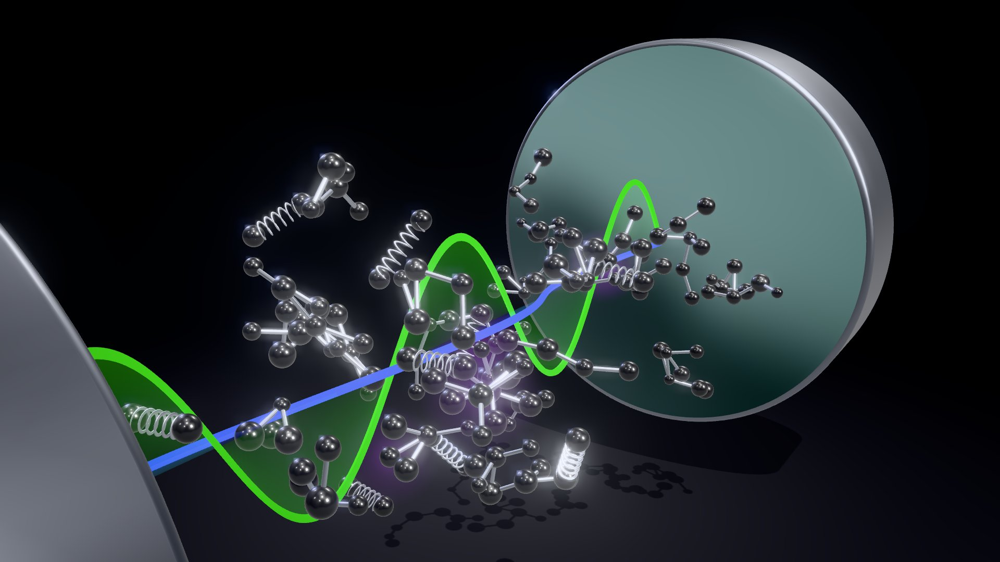
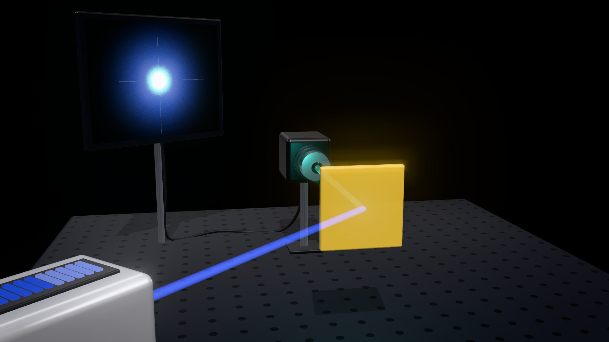

We use experimental quantum optics in discrete and continuous variables to study quantum phenomena in large-scale and complex systems. Our work follows three directions:
Our research explores fundamental interactions between light and matter in solid-state systems and molecules, with a particular focus on quantum correlations arising from electronic and vibrational degrees of freedom coupled to light. We experimentally investigate quantum coherence, multipartite entanglement, and nonlinear quantum effects in collective exciton–phonon (vibrational) systems confined within high-Q optical cavities. We aim for near-deterministic generation of quantum light-matter states that remain robust against large thermal fluctuations, even above room temperature, with applications in quantum communication, sensing and imaging in the mid-IR and THz ranges.

Molecules between two microcavity mirrors: the springs are molecular vibrations, the green wave is the condensate mode and the blue line the exciton. After Phys. Rev. Lett. 133, 186903.
Since the first experiments demonstrating Bose–Einstein condensation in ultra-cold atoms, BECs have been realized for photons, magnons, excitons, and cavity polaritons. Light-matter BECs in optical cavities represent a class of nonequilibrium open quantum systems capable of producing persistent macroscopic quantum states, where all particles share the same quantum properties, are indistinguishable, and collectively form a macroscopic coherent matter wave with long-range order. This makes nonequilibrium BECs a versatile platform for exploring the fundamental role of quantum correlations and coherence in condensed matter and molecular systems (see our paper with Los Alamos National Laboratory, Phys. Rev. Lett. 133, 186903).
Over the past decade, advances in light-matter condensation have led to novel architectures for optoelectronic devices, including tunable coherent light sources that do not rely on population inversion, ultrafast all-optical transistors, and logic gates operating at the single-photon level under ambient conditions. With industry partners, we are developing building blocks and interconnects for high-performance computing in the TIA Seed project.

A polariton condensate on the optical table: the laser pumps the sample above threshold, and the camera's picture of the emission in k space, on the monitor, has narrowed to a bright spot. After arXiv:2601.15080.
K. K. K. Ho, V. Yu. Shishkov, M. Amini, L. T. Wrathall, E. Mamonov, D. Urbonas, I. Georgakilas, T. Herkenrath, M. Forster, U. Scherf, T. Niemi, P. Törmä, A. V. Zasedatelev
arXiv:2601.15080 (preprint, 2026)
Polariton condensates, all-optical logic, open quantum systems, thermalization
Quantum control over large mass motion
Optical trapping of microscopic particles, such as neutral atoms, ions, and molecules in ultra-high vacuum (UHV), has transformed atomic, molecular and optical (AMO) and quantum physics, laying the foundation for quantum computing and metrology. Recently, trapping technologies have been extended to macroscopic particles, including nano- and micrometer-sized solid-state objects comprising billions of atoms. The extreme sensitivity of their motion to external forces can be exploited in fundamental physics to search for dark matter, probe physics beyond the Standard Model, and might eventually provide insights into the question of whether the gravitational interaction is fundamentally quantum or not. Beyond fundamental research, they are a platform for sensing applications including gravimeters, pressure sensors, inertial force (acceleration and rotation) sensors, as well as electric and magnetic field sensors.
However, the large size and complexity of macroscopic particles pose significant experimental challenges in bringing their motion into the quantum regime. Various decoherence processes tend to destroy quantum behavior of large masses. Advanced quantum optics methods and real-time optimal control mitigate strong decoherence, enabling the preparation of quantum states of motion, such as squeezed, superposition, or entangled states. We are developing a new hybrid trap that combines radio-frequency (RF) and dark optical trapping under UHV conditions, allowing for precise motion control of large-mass particles while suppressing quantum noise and internal heating, key obstacles to quantum experiments with macroscopic systems, e.g. entanglement generation (see the EU project report on our collaboration with the Aspelmeyer group in Vienna).
The dark optical trap. The height and brightness of the surface show the intensity of the trapping light; the particle sits in the dark minimum. After arXiv:2607.09896.
Doctoral and master's thesis projects are arranged on a rolling basis. See open positions, or write to Anton Zasedatelev at anton.zasedatelev@aalto.fi with a CV, a transcript, and a short note on which of these directions interests you and why.